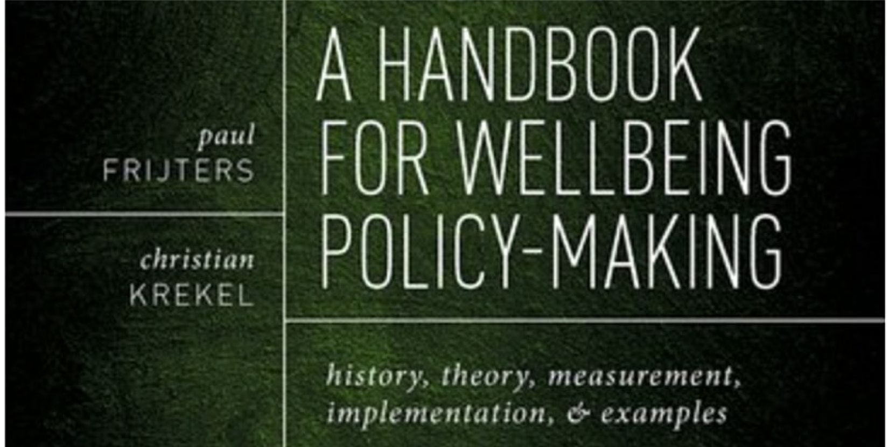

Wellbeing & Policy Making Book Launch Event on 1st July 5-6.30pm London Time. Attending the Launch is Free, the book is not!
[blurb from Nancy Hey, director of the WW Centre for Wellbeing]:
The What Works Centre for Wellbeing, and our commissioning partners at the ESRC: Economic and Social Research Council have been working with colleagues at The London School of Economics and Political Science (LSE) for the last four years to bring the science of wellbeing economics into policy making so that it can be used consistently and with confidence. This groundwork is summarised from an academic perspective in a new book from Prof Paul Frijters and Dr Christian Krekel.
Join me on 1st July 5-6.30pm for the launch of their new book and to hear from our superb panel of scholars and practitioners Prof Lord Richard Layard, The Brookings Institution's Carol Graham , Government Economic Service's Sara MacLennan , Prof Andrew Oswald from University of Warwick, McKinsey & Company's Tera Allas Prof Liam Delaney from The London School of Economics and Political Science (LSE) on their perspectives on wellbeing and policy making past, present and future and around the world.
Please register here: https://lnkd.in/dZS3baC
#research #science #future #economics #wellbeing #policy #publicpolicy
#policymaking #WellbeingEconomics #WellbeingEconomy #BookLaunch
